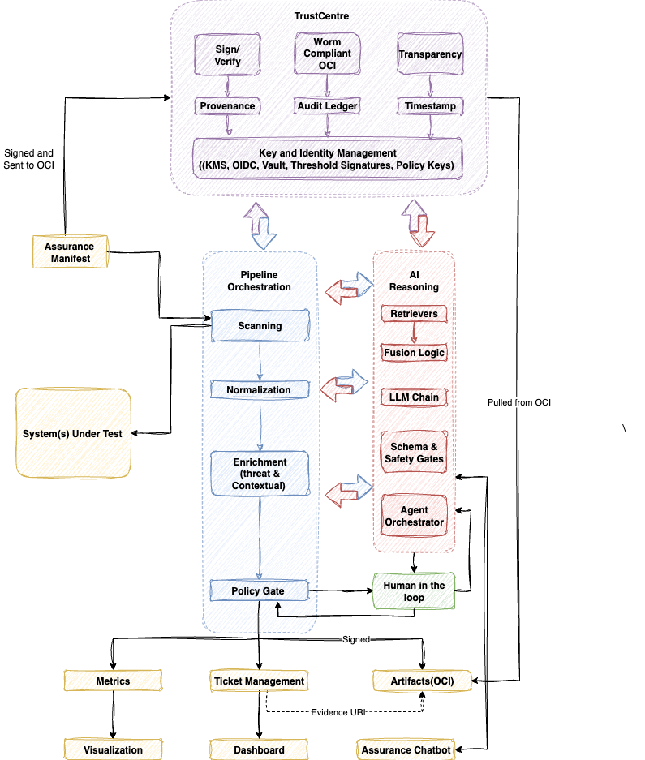

Architecture¶
Click to view Architecture

1. Assurance Manifest¶
Purpose: The declarative control layer that defines assurance scope, configurations, and required checks.
It describes what systems, tests, and policies are to be run, and acts as the canonical “contract” for an assurance run.
Responsibilities:
- Declare systems, models, and artifacts under test
- Reference applicable policies, frameworks, and thresholds
- Define metadata (owners, risk context, environments)
- Produce signed assurance manifests sent to the OCI registry
2. Pipeline Orchestration¶
Purpose: The control layer that runs and coordinates all scanning, enrichment, and gating tasks.
Examples: Dagger, GitHub Actions, Tekton, GitLab CI/CD, or any workflow orchestrator.
Responsibilities:
- Schedule and execute the assurance stages
- Manage data flow between scanners, normalizers, enrichers, and gates
- Ensure each step emits signed evidence artifacts
3. Systems Under Test¶
Purpose: The targets being evaluated — can be application code, AI models, datasets, configurations, or deployed systems.
Examples:
- Source repositories (code)
- Trained AI models (
.onnx,.pt,.safetensors) - Cloud workloads (VMs, clusters)
- Data assets or ETL pipelines
Output: Artifacts ready for scanning.
4. Scanning — Assurance Testing Tooling¶
Scanners identify security flaws, policy violations, or data risks across multiple assurance domains.
| Category | Example Tools | Focus |
|---|---|---|
| Security | SAST, DAST, SCA, IaC | Vulnerabilities, misconfigurations |
| Integrity | Sigstore, SLSA, Falco | Provenance, tamper detection, drift |
| Privacy | Presidio, Macie, Great Expectations | PII leakage, data masking, privacy risk |
| AI Assurance | PyRIT, AIF360, DeepEval, Guardrails | Bias, fairness, hallucination, unsafe output |
Each scanner produces structured output (e.g., SARIF, JSON, or custom format).
5. Normalization¶
Purpose: Converts heterogeneous scanner results into a consistent schema for downstream analysis.
Key Tasks:
- Schema Alignment: Convert outputs (SARIF preferred) to a standard model
- Fingerprinting: Assign unique IDs to findings (to track persistence across runs)
- Severity Mapping: Standardize severities (e.g., map “critical” → CVSS 9–10)
Output Example:
{
"fingerprint": "abc123",
"severity": "high",
"source": "snyk",
"target": "service-a",
"file": "src/main.py"
}
6. Enrichment¶
A. Contextual Enrichment¶
Adds business, operational, and traceability context.
| Field | Description |
|---|---|
| Severity | Finalized severity after normalization |
| Component or Service | Derived from repo or deployment manifest |
| Evidence URI (Placeholder) | Temporary identifier that will later point to the signed OCI evidence |
| Additional Labels | e.g., tool:snyk, env:prod, team:payments |
B. Threat Enrichment¶
Adds external risk intelligence and threat context.
| Field | Description |
|---|---|
| CVSS / CWE / CPE | Classification and scoring references |
| Exploit Available? | Indicates known exploit existence |
| EPSS Score | Probability of exploitation |
| Patch Available | Boolean flag for fixability |
| Vulnerability Score | Composite risk score based on contextual + threat data |
7. Policy Gate (Policy Decision)¶
Purpose: The automated evaluation checkpoint where findings are tested against defined policies.
Implemented as: Code-based policy (CUE, Rego, or OPA rules).
Core Inputs:
- Normalized and enriched findings
- Policy definitions and thresholds
- Optional human approvals (from previous runs)
| Policy | Description |
|---|---|
| SEC-001 | No critical vulnerabilities in production without valid waiver |
| INT-002 | Artifacts must have valid Sigstore signature |
| PRV-003 | Privacy risk score must be ≤ 0.5 |
| AI-004 | Model bias must be ≤ 0.2 or requires review |
Outputs:
- Pass: All rules satisfied → pipeline proceeds automatically
- Fail: One or more violations detected → triggers Human-in-the-Loop
8. Human in the Loop (HITL)¶
Purpose: Manual approval or override for exceptions requiring judgment.
Triggered by:
- Known exploited vulnerabilities (KEV = true)
- High EPSS (≥ 0.7)
- Critical/High findings in production
- Potential false positives
Process:
- Gate pauses and sends a review request (ticket or form)
- Reviewer assesses evidence and approves or rejects
- Approved waivers are signed and stored as OCI artifacts
- Pipeline resumes and re-evaluates the gate with approval context
Evidence Type Example:
{
"type": "approval",
"approved_by": "seclead@example.com",
"scope": "finding:abc123",
"expires_at": "2025-11-05"
}
9. Outputs and Evidence Management¶
After passing the policy gate (either automatically or with approval), the pipeline produces three main evidence outputs.
A. Metrics¶
Aggregated quantitative data (counts, trends, severities, scores).
Used for visualization and continuous monitoring.
Examples: vulnerability counts by team, mean time to approval, bias trendline.
B. Ticket Management¶
Issues and findings are synchronized into a project management tool (e.g., OpenProject, Jira).
Each ticket links to its Evidence URI in the OCI registry.
Supports remediation tracking and SLA management.
C. Artifacts (OCI Registry)¶
The canonical storage for all signed evidence:
- Normalized results
- Enrichment data
- Policy evaluation output
- Human approvals
Each artifact is immutable and referenced by a digest (e.g., oci://assurance/findings@sha256:...).
10. Visualization & Dashboards¶
Visualization: Feeds from Metrics for reporting and analytics.
Commonly implemented via Grafana or similar dashboards.
Dashboard (Governance View):
Feeds from Ticket Management for operational tracking.
Provides audit-ready evidence of exceptions, open risks, and assurance status.
11. TrustCentre¶
Purpose: The cryptographic and identity backbone of the assurance framework — ensuring that all evidence, policies, and approvals are verifiable, timestamped, and immutable.
Components:
| Component | Description |
|---|---|
| Sign / Verify | Handles digital signatures (Cosign, KMS, or keyless Sigstore). Every artifact, manifest, and waiver is signed before publishing. |
| WORM-Compliant OCI | Write-Once, Read-Many (WORM)–compliant OCI registry that guarantees immutability for stored evidence (e.g., Harbor, ORAS, GCP Artifact Registry). |
| Transparency | Enables public or internal verifiability of evidence chains using transparency logs (e.g., Rekor) or Merkle proofs. |
| Provenance | Records the lineage of all artifacts — mapping “who, what, when, how” for every piece of evidence. |
| Audit Ledger | A verifiable event log that records all pipeline operations, human approvals, and gate evaluations for audit readiness. |
| Timestamp | RFC 3161–compliant timestamps to bind evidence to trusted time anchors. |
| Key & Identity Management | Integrates enterprise KMS, OIDC identity providers, and Vault for secure key material and policy-based signing. Supports threshold signatures and delegated authority (e.g., policy keys). |
Output: Signed, timestamped, and provenance-linked artifacts that form the root of trust for the entire assurance ecosystem.
12. AI Reasoning¶
Purpose: Provides semantic analysis, correlation, and higher-order reasoning across all assurance artifacts using AI models.
Acts as the “assurance intelligence” layer that can interpret evidence, generate insights, and assist reviewers.
Core Modules:
| Module | Description |
|---|---|
| Retrievers | Query vector databases or OCI manifests to locate relevant evidence, policies, and prior run history. |
| Fusion Logic | Aggregates multi-source evidence and correlates findings (e.g., linking a vulnerability with its exploit probability and waiver context). |
| LLM Chain | Executes large language model (LLM) workflows — e.g., summarizing findings, generating assurance narratives, or classifying risks. |
| Schema & Safety Gates | Enforces guardrails ensuring AI outputs adhere to expected schema, bias limits, and factual consistency before being published. |
| Agent Orchestrator | Coordinates specialized AI agents (e.g., risk summarizer, waiver validator, or privacy auditor) and routes tasks between them. |
Responsibilities:
- Perform context-aware analysis across structured and unstructured assurance data
- Generate natural language summaries for dashboards and auditors
- Run DeepEval or equivalent frameworks to evaluate AI-generated outputs for accuracy and safety
- Contribute derived metrics (e.g., hallucination rate, bias delta, model drift) to Metrics and Visualization layers
Output: AI-augmented reasoning traces and structured evidence summaries, stored in the OCI registry and linked to Assurance Chatbot.
13. Assurance Chatbot¶
Purpose: Human–machine interface that allows engineers, auditors, and stakeholders to query assurance evidence conversationally.
Key Functions:
- Interactive Querying: Retrieve artifacts and metrics via natural language (e.g., “Show all privacy waivers approved in Q4”).
- Context-Aware Assistance: Uses retrievers and fusion logic from the AI Reasoning layer to explain findings, waivers, or policy outcomes.
- Provenance-Aware Responses: All chatbot outputs reference verifiable Evidence URIs (never hallucinated data).
- Human Feedback Loop: Allows auditors to flag discrepancies or provide annotations, which become part of the next enrichment cycle.
Example Interaction:
User: “Why was SEC-001 waived for Service X?”
Chatbot: “Waiver approved by seclead@example.com on 2025-11-05, linked to Finding abc123 (CVSS 9.1). Evidence URI:oci://assurance/waivers@sha256:....”
Backend Integration:
- Pulls from OCI registry, metrics store, and ticket system
- Uses LLM Chain + Schema/Safety Gates to ensure outputs remain accurate and non-speculative
- Logs every query and response for audit traceability
14. Evidence & Traceability¶
Every step produces signed or attestable evidence.
| Step | Evidence Type | Storage |
|---|---|---|
| Scanning | Raw scanner reports | Temporary workspace |
| Normalization | Normalized SARIF | OCI Registry |
| Enrichment | Contextual + Threat JSON | OCI Registry |
| Policy Decision | Gate results + policy version | OCI Registry |
| HITL | Approval artifact | OCI Registry |
| Outputs | Aggregated metrics & dashboards | Monitoring systems |
All evidence URIs are included in tickets and metrics, ensuring end-to-end traceability.
15. Key Design Principles¶
| Principle | Description |
|---|---|
| Immutable Evidence | All artifacts are signed and stored immutably (OCI digests). |
| Policy-as-Code | Rules are versioned, testable, and reviewed like software. |
| Human-in-the-Loop | Humans intervene only where judgment is required. |
| Continuous Enrichment | Findings are dynamically enriched with internal and external context. |
| Unified Schema | SARIF (or equivalent) ensures interoperability across scanners. |
| Auditability | Each decision is traceable from source to signature. |
16. Optional Extensions¶
| Extension | Description |
|---|---|
| Integrity Drift Monitor | Continuously verify that deployed workloads match signed artifacts. |
| Privacy Regression Suite | Run privacy checks before every dataset or model update. |
| AI Evaluation Metrics | Integrate hallucination rate, bias delta, explainability score. |
| Continuous Feedback Loop | Feed metrics back into developer dashboards and risk scoring models. |
Summary¶
This pipeline provides a single source of truth for security, integrity, privacy, and AI assurance.
It turns what were once siloed checks into a cohesive, auditable, and policy-driven control plane.
By combining automation + human oversight + immutable evidence, this model enables organizations to achieve:
- Continuous compliance
- Measurable trust
- Real-time visibility across all assurance dimensions